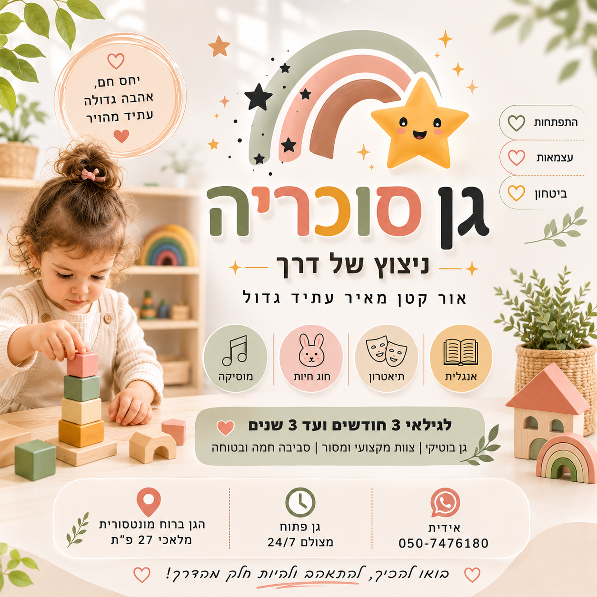
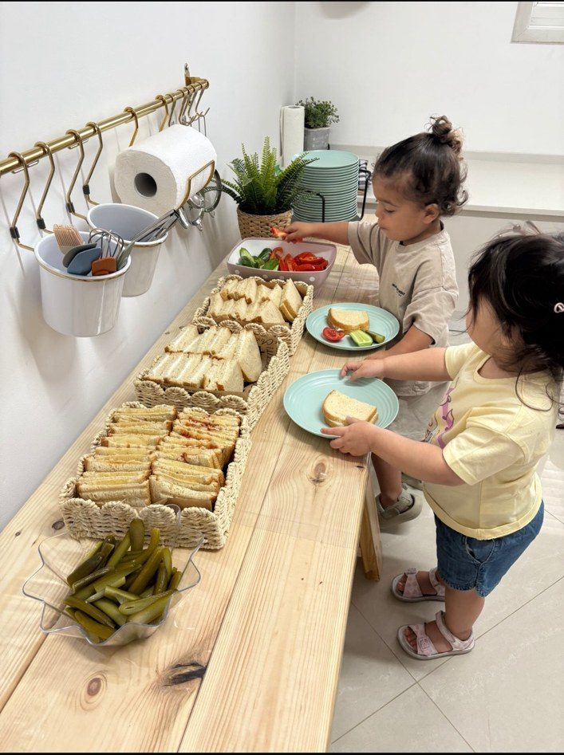
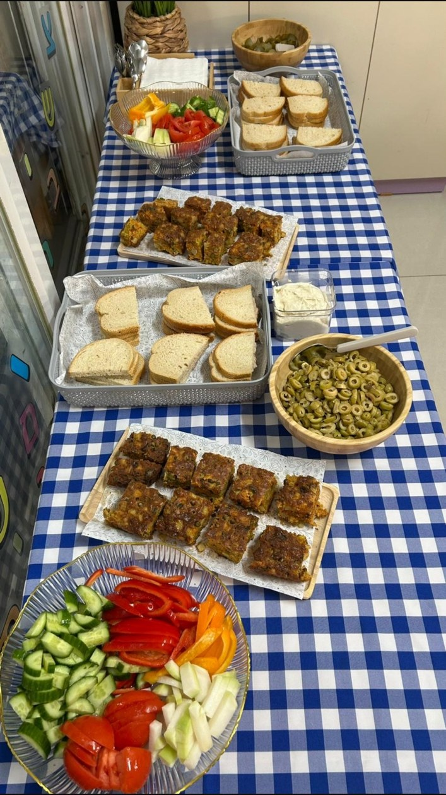
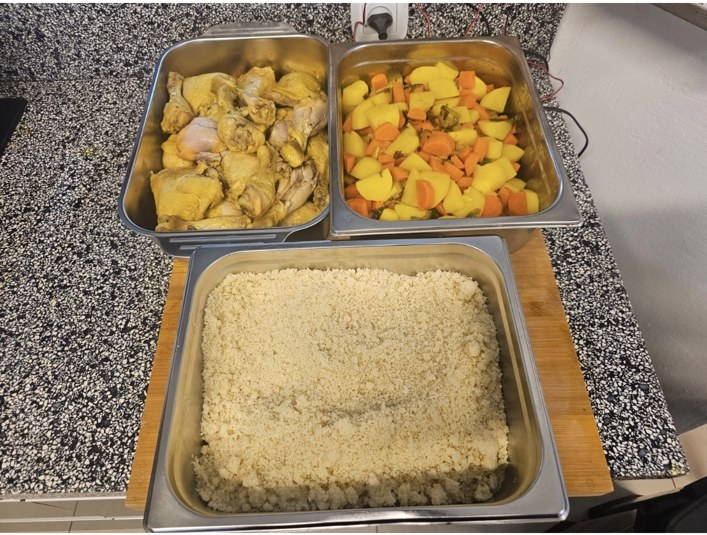
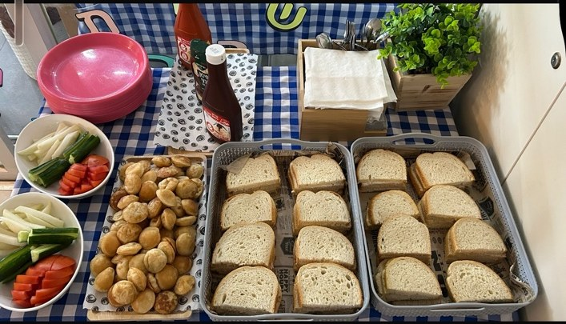
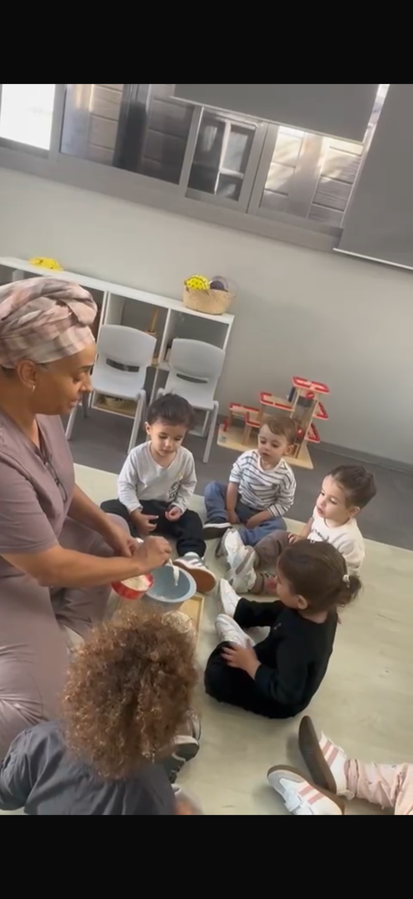

ניצוץ של דרך
גן סוכריה בפתח תקווה — מקום חם, בטוח ומלא אהבה לילדים מגיל 3 חודשים ועד 3 שנים.
💗 לתיאום ביקור בגןבשנים הראשונות ילד בונה את עצמו. אנחנו כאן להתבונן, להקשיב, להכיר אותו באמת ולהכין עבורו סביבה שמאפשרת לו לפעול, להתנסות, לבחור ולגלות.
הלמידה המשמעותית בגיל הרך נמצאת בתוך החיים עצמם — במשחק, בתנועה, בארוחה, ביצירה, בקשרים עם חברים ובכל ניסיון קטן לעשות משהו בעצמנו.
אנחנו נותנים לילדים הזדמנויות להתנסות, לבחור, להשתתף ולגלות — בקצב שלהם.
המרחבים בגן מותאמים לילדים ולשלב ההתפתחותי שלהם. דברים נגישים, מרחב לתנועה והזדמנויות אמיתיות לפעול ולהרגיש: המקום הזה נבנה גם בשבילי.
מוזיקה, תנועה, תיאטרון, אנגלית וחוג חיות — לצד משחק, יצירה וחוויות שמעשירות את עולמם של הילדים.
אוכל חם, טרי ומגוון — מוגש באהבה, באווירה נעימה ובהתאמה לילדים. גם הארוחה היא חלק מהיום: יושבים יחד, מתנסים, בוחרים ובהדרגה עושים עוד ועוד דברים בעצמנו.




הילדים פוגשים אוכל בצורה נעימה ומזמינה, לומדים לבחור, לטעום, לשבת יחד ולהיות חלק אמיתי מהשגרה.
לאורך השנה אנחנו יוצרים מפגשים, אירועים וחוויות שמחברים בין המשפחות ויוצרים סביב הילדים תחושת שייכות וזיכרונות משותפים.

“הטוב ביותר לקטנים ביותר.”
פשטות, נתינה, אהבה ועיניים טובות. הרצון לראות כל ילד באמת, ללוות אותו בכבוד ולתת לו מקום לפרוח.
אני מאמינה שכל ילד הוא עולם ומלואו, עם קצב משלו, סקרנות, יכולות ודרך ייחודית לפרוח. חינוך אמיתי מתחיל בקשר, בהקשבה, בכבוד ובתחושת ביטחון ואהבה.
הדלת שלנו פתוחה. נשמח להכיר אתכם ואת הילד שלכם, לענות על כל שאלה ולהראות לכם מקרוב את המקום.
💗 שלחו לנו הודעה בוואטסאפ